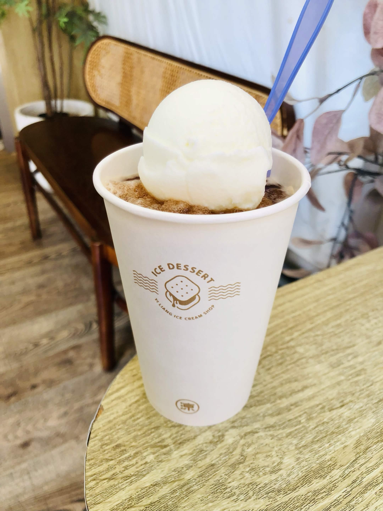

一涼製冰所
關於 一涼製冰所
一涼製冰所共有10種口味冰餅可供選擇，一個35元，每個月還有隱藏版期間限定口味是40元。冰餅用的是嘉義名產福義軒蘇打餅，餅乾酥脆不容易軟掉。中間夾著超厚實的冰淇淋，冰冰涼涼又很爽口。除此之外也可以搭配雪泥，是炎炎夏日消暑的好選擇。
店內販售品項單純，主要分為「冰餅」、「冰淇淋」、「雪泥」及「雪泥+冰淇淋」四種。傳承自雲林50年老字號「溝壩清涼冰店」的好手藝，將古早味的手工製冰技術融入清新日系文青風的包裝，親民的銅板價格更是深受年輕族群與遊客喜愛。
美食推薦
牛奶冰淇淋+紅茶雪泥
奶冰有著濃厚的奶香，紅茶雪泥也不會太甜，茶香跟奶香疊在一起，清爽消暑。
個人心得
一涼製冰所整體光線柔美，清新簡約文青風的店面，福義軒蘇打餅比較香脆，冰淇淋也是給的很厚實，整體吃起來很清爽，而雪泥也是很特別，搭配冰淇淋的組合是我每次去都會點的組合，很推薦試試。



- 📍 地點：嘉義市東區中央里中正路331號
- 📆 營業時間：每日 12:00–21:00
- 💰 價格：約 $35 - $80
- ☎️ 聯絡方式：05 227 9062